首页 > 编程笔记
IEEE 754浮点数标准详解
在计算机系统的发展过程中，业界曾经提出过许多种实数的表达方法，比较典型的有相对于浮点数（Floating Point Number）的定点数（Fixed Point Number）。在定点数表达法中，其小数点固定地位于实数所有数字中间的某个位置。例如，货币的表达就可以采用这种表达方式，如 55.00 或者 00.55 可以用于表达具有 4 位精度，小数点后有两位的货币值。由于小数点位置固定，所以可以直接用 4 位数值来表达相应的数值。
但我们不难发现，定点数表达法的缺点就在于其形式过于僵硬，固定的小数点位置决定了固定位数的整数部分和小数部分，不利于同时表达特别大的数或者特别小的数。因此，最终绝大多数现代的计算机系统都采纳了所谓的浮点数表达法。
浮点数表达法采用了科学计数法来表达实数，即用一个有效数字。一个基数（Base）、一个指数（Exponent）以及一个表示正负的符号来表达实数。比如，666.66 用十进制科学计数法可以表达为 6.6666×102（其中，6.6666 为有效数字，10 为基数，2 为指数）。浮点数利用指数达到了浮动小数点的效果，从而可以灵活地表达更大范围的实数。
当然，对实数的浮点表示仅作如上的规定是不够的，因为同一实数的浮点表示还不是唯一的。例如，上面例子中的 666.66 可以表达为 0.66666×103、6.6666×102 或者 66.666×101 三种方式。因为这种表达的多样性，因此有必要对其加以规范化以达到统一表达的目标。规范的浮点数表达方式具有如下形式：
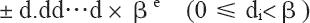
其中，d.dd…d 为有效数字，β 为基数，e 为指数。
有效数字中数字的个数称为精度，我们可以用 p 来表示，即可称为 p 位有效数字精度。每个数字 d 介于 0 和基数 β 之间，包括 0。更精确地说，±d0.d1d2…dp-1×βe 表示以下数：
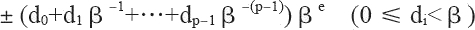
其中，对十进制的浮点数，即基数 β 等于 10 的浮点数而言，上面的表达式非常容易理解。如 12.34，我们可以根据上面的表达式表达为：1×101+2×100+3×10-1+4×10-2，其规范浮点数表达为1.234×101。
但对二进制来说，上面的表达式同样可以简单地表达。唯一不同之处在于：二进制的 β 等于 2，而每个数字 d 只能在 0 和 1 之间取值。如二进制数 1001.101，我们可以根据上面的表达式表达为：1×23+0×22+0×21+1×20+1×2-1+0×2-2+1×2-3，其规范浮点数表达为 1.001101×23。
现在，我们就可以这样简单地把二进制转换为十进制，如二进制数 1001.101 转换成十进制为：
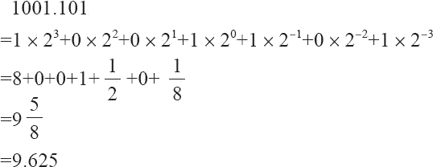
由上面的等式，我们可以得出：向左移动二进制小数点一位相当于这个数除以 2，而向右移动二进制小数点一位相当于这个数乘以 2。如 101.11=3/4，而 10.111=7/8。除此之外，我们还可以得到这样一个基本规律：一个十进制小数要能用浮点数精确地表示，最后一位必须是 5（当然这是必要条件，并非充分条件）。规律推演如下面的示例所示：
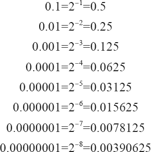
我们也可以使用一段 C 程序来验证：
34.6-34.0=0.599998
34.5-34.0=0.500000
之所以“34.6-34.0=0.599998”，产生这个误差的原因是 34.6 无法精确地表达为相应的浮点数，而只能保存为经过舍入的近似值。而这个近似值与 34.0 之间的运算自然无法产生精确的结果。
上面阐述了二进制数转换十进制数，如果你要将十进制数转换成二进制数，则需要把整数部分和小数部分分别转换。其中，整数部分除以 2，取余数；小数部分乘以 2，取整数位。如将 13.125 转换成二进制数如下：
1、首先转换整数部分（13），除以 2，取余数，所得结果为 1101。
2、其次转换小数部分（0.125），乘以 2，取整数位。转换过程如下：
除此之外，与浮点表示法相关联的其他两个参数是“最大允许指数”和“最小允许指数”，即 emax 和 emin。由于存在 βp 个可能的有效数字，以及 emax-emin+1 个可能的指数，因此浮点数可以按 [log2(emax-emin+1)]+[log2(βp)]+1 位编码，其中最后的 +1 用于符号位。
直到 1976 年，Intel 公司打算为其 8086 微处理器引进一种浮点数协处理器时，意识到作为芯片设计者的电子工程师和固体物理学家也许并不能通过数值分析来选择最合理的浮点数二进制格式。于是，他们邀请加州大学伯克利分校的 William Kahan 教授（当时最优秀的数值分析家）来为 8087 浮点处理器（FPU）设计浮点数格式。而这时，William Kahan 教授又找来两个专家协助他，于是就有了 KCS 组合（Kahn、Coonan和Stone），并共同完成了 Intel 公司的浮点数格式设计。
由于 Intel 公司的 KCS 浮点数格式完成得如此出色，以致 IEEE（Institute of Electrical and Electronics Engineers，电子电气工程师协会）决定采用一个非常接近 KCS 的方案作为 IEEE 的标准浮点格式。于是，IEEE 于 1985 年制订了二进制浮点运算标准 IEEE 754（IEEE Standard for Binary Floating-Point Arithmetic，ANSI/IEEE Std 754-1985），该标准限定指数的底为 2，并于同年被美国引用为 ANSI 标准。目前，几乎所有的计算机都支持 IEEE 754 标准，它大大地改善了科学应用程序的可移植性。
考虑到 IBM System/370 的影响，IEEE 于 1987 年推出了与底数无关的二进制浮点运算标准 IEEE 854，并于同年被美国引用为 ANSI 标准。1989 年，国际标准组织 IEC 批准 IEEE 754/854 为国际标准 IEC 559：1989。后来经修订后，标准号改为 IEC 60559。现在，几乎所有的浮点处理器完全或基本支持 IEC 60559。同时，C99 的浮点运算也支持 IEC 60559。
IEEE 浮点数标准是从逻辑上用三元组{S，E，M}来表示一个数 V 的，即 V=（-1）S×M×2E，如图1 所示。

符号位 s（Sign）决定数是正数（s＝0）还是负数（s＝1），而对于数值 0 的符号位解释则作为特殊情况处理。
有效数字位 M（Significand）是二进制小数，它的取值范围为 1~2-ε，或者为 0~1-ε。它也被称为尾数位（Mantissa）、系数位（Coefficient），甚至还被称作“小数”。
指数位 E（Exponent）是 2 的幂（可能是负数），它的作用是对浮点数加权。
浮点数格式是一种数据结构，它规定了构成浮点数的各个字段、这些字段的布局及算术解释。IEEE 754 浮点数的数据位被划分为三个段，从而对以上这些值进行编码。其中，一个单独的符号位 s 直接编码符号 s；k 位的指数段 exp=ek-1…e1e0，编码指数 E；n 位的小数段 frac=fn-1…f1f0，编码有效数字 M，但是被编码的值也依赖于指数域的值是否等于 0。
根据 exp 的值，被编码的值可以分为如下几种不同的情况。
1) 格式化值
当指数段 exp 的位模式既不全为 0（即数值 0），也不全为 1（即单精度数值为 255，以单精度数为例， 8 位的指数为可以表达 0~255 的 255 个指数值；双精度数值为 2047）的时候，就属于这类情况。如图 2 所示。

图 2
我们知道，指数可以为正数，也可以为负数。为了处理负指数的情况，实际的指数值按要求需要加上一个偏置（Bias）值作为保存在指数段中的值。因此，这种情况下的指数段被解释为以偏置形式表示的有符号整数。即指数的值为：E=e-Bias
其中，e 是无符号数，其位表示为 ek-1…e1e0，而 Bias 是一个等于 2k-1-1（单精度是 127，双精度是 1023）的偏置值。由此产生指数的取值范围是：单精度为 -126~+127，双精度为 -1022~+1023。
对小数段 frac，可解释为描述小数值 f，其中 0≤f<1，其二进制表示为 0.fn-1…f1f0，也就是二进制小数点在最高有效位的左边。有效数字定义为 M=1+f。有时候，这种方式也叫作隐含的以 1 开头的表示法，因为我们可以把 M 看成一个二进制表达式为 1.fn-1fn-2…f0 的数字。既然我们总是能够调整指数 E，使得有效数字 M 的范围为 1≤M<2（假设没有溢出），那么这种表示方法是一种轻松获得一个额外精度位的技巧。同时，由于第一位总是等于 1，因此我们就不需要显式地表示它。拿单精度数为例，按照上面所介绍的知识，实际上可以用 23 位长的有效数字来表达 24 位的有效数字。比如，对单精度数而言，二进制的 1001.101（即十进制的 9.625）可以表达为 1.001101×23，所以实际保存在有效数字位中的值为：
根据上面所阐述的规则，下面以实数 -9.625 为例，来看看如何将其表达为单精度的浮点数格式。具体转换步骤如下：
1、首先，需要将 -9.625 用二进制浮点数表达出来，然后变换为相应的浮点数格式。即 -9.625 的二进制为 1001.101，用规范的浮点数表达应为 1.001101×23。
2、其次，因为 -9.625 是负数，所以符号段为 1。而这里的指数为 3，所以指数段为 3+127=130，即二进制的 10000010。有效数字省略掉小数点左侧的 1 之后为 001101，然后在右侧用零补齐。因此所得的最终结果为：
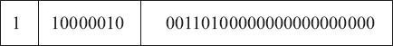
3、最后，我们还可以将浮点数形式表示为十六进制的数据，如下所示：
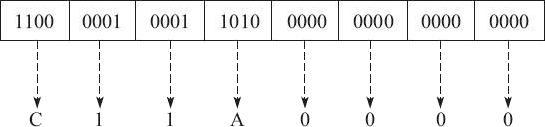
即最终的十六进制结果为 0xC11A0000。
2) 特殊数值
IEEE 标准指定了以下特殊值：±0、反向规格化的数、±∞ 和 NaN（如下表所示）。这些特殊值都是使用 emax+1 或 emin-1 的指数进行编码的。

NaN：当指数段 exp 全为 1 时，小数段为非零时，结果值就被称为“NaN”（Not any Number），如图 3 所示。

图 3
一般情况下，我们将 0/0 或:

视为导致计算终止的不可恢复错误。但是，一些示例表明在这样的情况下继续进行计算是有意义的。这时候就可以通过引入特殊值 NaN，并指定诸如 0/0 或
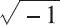
之类的表达式计算来生成 NaN 而不是停止计算，从而避免此问题。下表中列出了一些可以导致 NaN 的情况。

无穷：当指数段 exp 全为 1，小数段全为 0 时，得到的值表示无穷。当 s=0 时是 +∞，或者当 s=1 时是 -∞。如图 4 所示。
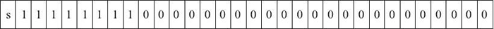
图 4
无穷用于表达计算中产生的上溢问题。比如两个极大的数相乘时，尽管两个操作数本身可以保存为浮点数，但其结果可能大到无法保存为浮点数，必须进行舍入操作。根据IEEE标准，此时不能将结果舍入为可以保存的最大浮点数（因为这个数可能与实际的结果相差太远而毫无意义），而应将其舍入为无穷。对于结果为负数的情况也是如此，只不过此时会舍入为负无穷，也就是说符号域为1的无穷。
3) 非格式化值
当指数段 exp 全为 0 时，所表示的数就是非规格化形式，如图 5 所示。

图 5
在这种情况下，指数值 E=1-Bias，而有效数字的值 M=f，也就是说它是小数段的值，不包含隐含的开头的 1。
非规格化值有两个用途：
第一，它提供了一种表示数值 0 的方法。因为规格化数必须得使有效数字 M 在范围 1≤M<2 之中，即 M≥1，因此它就不能表示 0。实际上，+0.0 的浮点表示的位模式为全 0（即符号位是 0，指数段全为 0，而小数段也全为 0），这就得到 M=f=0。令人奇怪的是，当符号位为 1，而其他段全为 0 时，就会得到值 -0.0。根据 IEEE 的浮点格式来看，值 +0.0 和 -0.0 在某些方面是不同的。
第二，它表示那些非常接近于 0.0 的数。它们提供了一种属性，称为逐渐下溢出。其中，可能的数值分布均匀地接近于 0.0。
下面的单精度浮点数就是一个非格式化的示例。
它被转换成十进制表示大约等于 1.4×10-45，实际上它就是单精度浮点数所能表达的最小非格式化数。以此类推，格式化值和非格式化值所能表达的非负数值范围如下表所示。
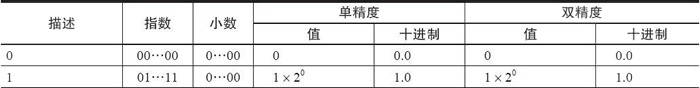

图 6
其中，32 位中的第 0 位存放小数段 frac 的最低有效位 LSB（least significant bit），第 22 位存放小数段 frac 的最高有效位 MSB（most significant bit）；第 23 位存放指数段 exp 的最低有效位 LSB，第 30 位存放指数段 exp 的最高有效位 MSB；最高位，即第 31 位存放符号 s。例如，单精度数 8.25 的存储方式如图 7 所示。
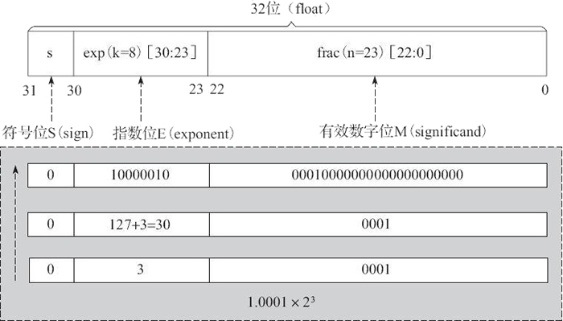
图 7

图 8
其中，frac[31：0] 存放小数段的低 32 位（即第 0 位存放整个小数段的最低有效位 LSB，第 31 位存放小数段低 32 位的最高有效位 MSB）；frac[51：32] 存放小数段的高 20 位（即第 32 位存放高 20 位的最低有效位 LSB，第 51 位存放整个小数段的最高有效位 MSB）；第 52 位存放指数段 exp 的最低有效位 LSB，第 62 位存放指数段 exp 的最高有效位 MSB；最高位，即第 63 位存放符号 s。
在 Intel x86 结构的计算机中，数据存放采用的是小端法（Little Endian），故较低地址的 32 位的字中存放小数段的 frac[31：0] 位。而在 SPARC 结构的计算机中，因其数据存放采用的是大端法（Big Endian），故较高地址的 32 位字中存放小数段的 frac[31：0] 位。
前面主要讨论了 IEEE 754 的单精度与双精度浮点格式，下表对浮点数的相关参数进行了总结，有兴趣的读者可以根据此表对其他浮点格式进行深入解读。
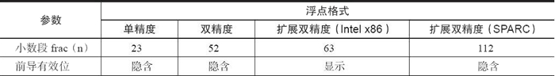
在浮点数的舍入问题上，IEEE 浮点格式定义了 4 种不同的舍入方式，如下表所示。其中，默认的舍入方法是向偶数舍入，而其他三种可用于计算上界和下界。
下表是 4 种舍入方式的应用举例。这里需要特别说明的是，向偶数舍入（向最接近的值舍入）方式会试图找到一个最接近的匹配值。因此，它将 1.4 舍入成 1，将 1.6 舍入成 2，而将 1.5 和 2.5 都舍入成 2。

或许看了上面的内容你会问：为什么要采用向偶数舍入这样的舍入策略，而不直接使用我们已经习惯的“四舍五入”呢？
其原因我们可以这样来理解：在进行舍入的时候，最后一位数字从 1 到 9，舍去的有 1、2、3、4；它正好可以和进位的 9、8、7、6 相对应，而 5 却被单独留下。如果我们采用四舍五入每次都将 5 进位的话，在进行一些大量数据的统计时，就会累积比较大的偏差。而如果采用向偶数舍入的策略，在大多数情况下，5 舍去还是进位概率是差不多的，统计时产生的偏差也就相应要小一些。
同样，针对浮点数据，向偶数舍入方式只需要简单地考虑最低有效数字是奇数还是偶数即可。例如，假设我们想将十进制数舍入到最接近的百分位。不管用哪种舍入方式，我们都将把 1.2349999 舍入到 1.23，而将 1.2350001 舍入到 1.24，因为它们不是在 1.23 和 1.24 的正中间。另一方面我们将把两个数 1.2350000 和 1.2450000 都舍入到 1.24，因为 4 是偶数。
由IEEE浮点格式定义的舍入方式可知，不论使用哪种舍入方式，都会产生舍入误差。如果在一系列运算中的一步或几步产生了舍入误差，在某些情况下，这个误差将会随着运算次数的增加而积累得很大，最终会得出没有意义的运算结果。因此，建议不要将浮点数用于精确计算。
当然，理论上增加数字位数可以减少可能会产生的舍入误差。但是，位数是有限的，在表示无限浮点数时仍然会产生误差。在用常规方法表示浮点数的情况下，这种误差是不可避免的，但是可以通过设置警戒位来减小。
除此之外，IEEE 754 还提出 5 种类型的浮点异常，即上溢、下溢、除以零、无效运算和不精确。其中，每类异常都有单独的状态标志。鉴于篇幅有限，本节就不再详细介绍。
但我们不难发现，定点数表达法的缺点就在于其形式过于僵硬，固定的小数点位置决定了固定位数的整数部分和小数部分，不利于同时表达特别大的数或者特别小的数。因此，最终绝大多数现代的计算机系统都采纳了所谓的浮点数表达法。
浮点数表达法采用了科学计数法来表达实数，即用一个有效数字。一个基数（Base）、一个指数（Exponent）以及一个表示正负的符号来表达实数。比如，666.66 用十进制科学计数法可以表达为 6.6666×102（其中，6.6666 为有效数字，10 为基数，2 为指数）。浮点数利用指数达到了浮动小数点的效果，从而可以灵活地表达更大范围的实数。
当然，对实数的浮点表示仅作如上的规定是不够的，因为同一实数的浮点表示还不是唯一的。例如，上面例子中的 666.66 可以表达为 0.66666×103、6.6666×102 或者 66.666×101 三种方式。因为这种表达的多样性，因此有必要对其加以规范化以达到统一表达的目标。规范的浮点数表达方式具有如下形式：
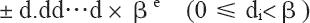
其中，d.dd…d 为有效数字，β 为基数，e 为指数。
有效数字中数字的个数称为精度，我们可以用 p 来表示，即可称为 p 位有效数字精度。每个数字 d 介于 0 和基数 β 之间，包括 0。更精确地说，±d0.d1d2…dp-1×βe 表示以下数：
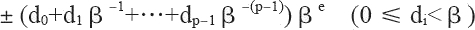
其中，对十进制的浮点数，即基数 β 等于 10 的浮点数而言，上面的表达式非常容易理解。如 12.34，我们可以根据上面的表达式表达为：1×101+2×100+3×10-1+4×10-2，其规范浮点数表达为1.234×101。
但对二进制来说，上面的表达式同样可以简单地表达。唯一不同之处在于：二进制的 β 等于 2，而每个数字 d 只能在 0 和 1 之间取值。如二进制数 1001.101，我们可以根据上面的表达式表达为：1×23+0×22+0×21+1×20+1×2-1+0×2-2+1×2-3，其规范浮点数表达为 1.001101×23。
现在，我们就可以这样简单地把二进制转换为十进制，如二进制数 1001.101 转换成十进制为：
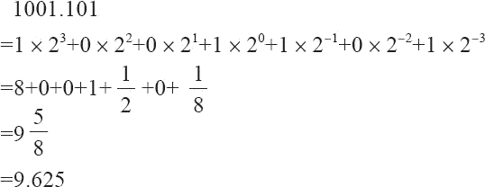
由上面的等式，我们可以得出：向左移动二进制小数点一位相当于这个数除以 2，而向右移动二进制小数点一位相当于这个数乘以 2。如 101.11=3/4，而 10.111=7/8。除此之外，我们还可以得到这样一个基本规律：一个十进制小数要能用浮点数精确地表示，最后一位必须是 5（当然这是必要条件，并非充分条件）。规律推演如下面的示例所示：
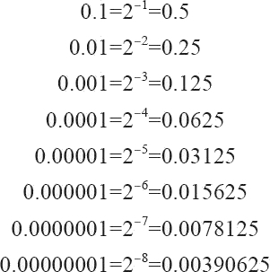
#include <stdio.h>
int main(void)
{
float f1=34.6;
float f2=34.5;
float f3=34.0;
printf("34.6-34.0=%f\n",f1-f3);
printf("34.5-34.0=%f\n",f2-f3);
return 0;
}
运行结果为：34.6-34.0=0.599998
34.5-34.0=0.500000
之所以“34.6-34.0=0.599998”，产生这个误差的原因是 34.6 无法精确地表达为相应的浮点数，而只能保存为经过舍入的近似值。而这个近似值与 34.0 之间的运算自然无法产生精确的结果。
上面阐述了二进制数转换十进制数，如果你要将十进制数转换成二进制数，则需要把整数部分和小数部分分别转换。其中，整数部分除以 2，取余数；小数部分乘以 2，取整数位。如将 13.125 转换成二进制数如下：
1、首先转换整数部分（13），除以 2，取余数，所得结果为 1101。
2、其次转换小数部分（0.125），乘以 2，取整数位。转换过程如下：
0.125×2=0.25 取整数位0
0.25×2=0.5 取整数位0
0.5×2=1 取整数位1
除此之外，与浮点表示法相关联的其他两个参数是“最大允许指数”和“最小允许指数”，即 emax 和 emin。由于存在 βp 个可能的有效数字，以及 emax-emin+1 个可能的指数，因此浮点数可以按 [log2(emax-emin+1)]+[log2(βp)]+1 位编码，其中最后的 +1 用于符号位。
浮点数表示法
直到 20 世纪 80 年代（即在没有制定 IEEE 754 标准之前），业界还没有一个统一的浮点数标准。相反，很多计算机制造商根据自己的需要来设计自己的浮点数表示规则，以及浮点数的执行运算细节。另外，他们常常并不太关注运算的精确性，而把实现的速度和简易性看得比数字的精确性更重要，而这就给代码的可移植性造成了重大的障碍。直到 1976 年，Intel 公司打算为其 8086 微处理器引进一种浮点数协处理器时，意识到作为芯片设计者的电子工程师和固体物理学家也许并不能通过数值分析来选择最合理的浮点数二进制格式。于是，他们邀请加州大学伯克利分校的 William Kahan 教授（当时最优秀的数值分析家）来为 8087 浮点处理器（FPU）设计浮点数格式。而这时，William Kahan 教授又找来两个专家协助他，于是就有了 KCS 组合（Kahn、Coonan和Stone），并共同完成了 Intel 公司的浮点数格式设计。
由于 Intel 公司的 KCS 浮点数格式完成得如此出色，以致 IEEE（Institute of Electrical and Electronics Engineers，电子电气工程师协会）决定采用一个非常接近 KCS 的方案作为 IEEE 的标准浮点格式。于是，IEEE 于 1985 年制订了二进制浮点运算标准 IEEE 754（IEEE Standard for Binary Floating-Point Arithmetic，ANSI/IEEE Std 754-1985），该标准限定指数的底为 2，并于同年被美国引用为 ANSI 标准。目前，几乎所有的计算机都支持 IEEE 754 标准，它大大地改善了科学应用程序的可移植性。
考虑到 IBM System/370 的影响，IEEE 于 1987 年推出了与底数无关的二进制浮点运算标准 IEEE 854，并于同年被美国引用为 ANSI 标准。1989 年，国际标准组织 IEC 批准 IEEE 754/854 为国际标准 IEC 559：1989。后来经修订后，标准号改为 IEC 60559。现在，几乎所有的浮点处理器完全或基本支持 IEC 60559。同时，C99 的浮点运算也支持 IEC 60559。
IEEE 浮点数标准是从逻辑上用三元组{S，E，M}来表示一个数 V 的，即 V=（-1）S×M×2E，如图1 所示。
图 1
其中：符号位 s（Sign）决定数是正数（s＝0）还是负数（s＝1），而对于数值 0 的符号位解释则作为特殊情况处理。
有效数字位 M（Significand）是二进制小数，它的取值范围为 1~2-ε，或者为 0~1-ε。它也被称为尾数位（Mantissa）、系数位（Coefficient），甚至还被称作“小数”。
指数位 E（Exponent）是 2 的幂（可能是负数），它的作用是对浮点数加权。
浮点数格式是一种数据结构，它规定了构成浮点数的各个字段、这些字段的布局及算术解释。IEEE 754 浮点数的数据位被划分为三个段，从而对以上这些值进行编码。其中，一个单独的符号位 s 直接编码符号 s；k 位的指数段 exp=ek-1…e1e0，编码指数 E；n 位的小数段 frac=fn-1…f1f0，编码有效数字 M，但是被编码的值也依赖于指数域的值是否等于 0。
根据 exp 的值，被编码的值可以分为如下几种不同的情况。
1) 格式化值
当指数段 exp 的位模式既不全为 0（即数值 0），也不全为 1（即单精度数值为 255，以单精度数为例， 8 位的指数为可以表达 0~255 的 255 个指数值；双精度数值为 2047）的时候，就属于这类情况。如图 2 所示。
图 2
我们知道，指数可以为正数，也可以为负数。为了处理负指数的情况，实际的指数值按要求需要加上一个偏置（Bias）值作为保存在指数段中的值。因此，这种情况下的指数段被解释为以偏置形式表示的有符号整数。即指数的值为：E=e-Bias
其中，e 是无符号数，其位表示为 ek-1…e1e0，而 Bias 是一个等于 2k-1-1（单精度是 127，双精度是 1023）的偏置值。由此产生指数的取值范围是：单精度为 -126~+127，双精度为 -1022~+1023。
对小数段 frac，可解释为描述小数值 f，其中 0≤f<1，其二进制表示为 0.fn-1…f1f0，也就是二进制小数点在最高有效位的左边。有效数字定义为 M=1+f。有时候，这种方式也叫作隐含的以 1 开头的表示法，因为我们可以把 M 看成一个二进制表达式为 1.fn-1fn-2…f0 的数字。既然我们总是能够调整指数 E，使得有效数字 M 的范围为 1≤M<2（假设没有溢出），那么这种表示方法是一种轻松获得一个额外精度位的技巧。同时，由于第一位总是等于 1，因此我们就不需要显式地表示它。拿单精度数为例，按照上面所介绍的知识，实际上可以用 23 位长的有效数字来表达 24 位的有效数字。比如，对单精度数而言，二进制的 1001.101（即十进制的 9.625）可以表达为 1.001101×23，所以实际保存在有效数字位中的值为：
00110100000000000000000
即去掉小数点左侧的 1，并用 0 在右侧补齐。根据上面所阐述的规则，下面以实数 -9.625 为例，来看看如何将其表达为单精度的浮点数格式。具体转换步骤如下：
1、首先，需要将 -9.625 用二进制浮点数表达出来，然后变换为相应的浮点数格式。即 -9.625 的二进制为 1001.101，用规范的浮点数表达应为 1.001101×23。
2、其次，因为 -9.625 是负数，所以符号段为 1。而这里的指数为 3，所以指数段为 3+127=130，即二进制的 10000010。有效数字省略掉小数点左侧的 1 之后为 001101，然后在右侧用零补齐。因此所得的最终结果为：
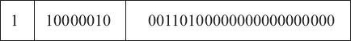
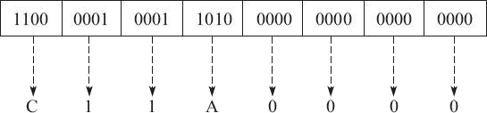
即最终的十六进制结果为 0xC11A0000。
2) 特殊数值
IEEE 标准指定了以下特殊值：±0、反向规格化的数、±∞ 和 NaN（如下表所示）。这些特殊值都是使用 emax+1 或 emin-1 的指数进行编码的。
图 3
一般情况下，我们将 0/0 或:
视为导致计算终止的不可恢复错误。但是，一些示例表明在这样的情况下继续进行计算是有意义的。这时候就可以通过引入特殊值 NaN，并指定诸如 0/0 或
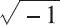
之类的表达式计算来生成 NaN 而不是停止计算，从而避免此问题。下表中列出了一些可以导致 NaN 的情况。
无穷：当指数段 exp 全为 1，小数段全为 0 时，得到的值表示无穷。当 s=0 时是 +∞，或者当 s=1 时是 -∞。如图 4 所示。
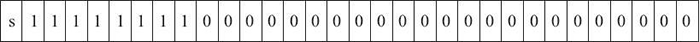
图 4
无穷用于表达计算中产生的上溢问题。比如两个极大的数相乘时，尽管两个操作数本身可以保存为浮点数，但其结果可能大到无法保存为浮点数，必须进行舍入操作。根据IEEE标准，此时不能将结果舍入为可以保存的最大浮点数（因为这个数可能与实际的结果相差太远而毫无意义），而应将其舍入为无穷。对于结果为负数的情况也是如此，只不过此时会舍入为负无穷，也就是说符号域为1的无穷。
3) 非格式化值
当指数段 exp 全为 0 时，所表示的数就是非规格化形式，如图 5 所示。
图 5
在这种情况下，指数值 E=1-Bias，而有效数字的值 M=f，也就是说它是小数段的值，不包含隐含的开头的 1。
非规格化值有两个用途：
第一，它提供了一种表示数值 0 的方法。因为规格化数必须得使有效数字 M 在范围 1≤M<2 之中，即 M≥1，因此它就不能表示 0。实际上，+0.0 的浮点表示的位模式为全 0（即符号位是 0，指数段全为 0，而小数段也全为 0），这就得到 M=f=0。令人奇怪的是，当符号位为 1，而其他段全为 0 时，就会得到值 -0.0。根据 IEEE 的浮点格式来看，值 +0.0 和 -0.0 在某些方面是不同的。
第二，它表示那些非常接近于 0.0 的数。它们提供了一种属性，称为逐渐下溢出。其中，可能的数值分布均匀地接近于 0.0。
下面的单精度浮点数就是一个非格式化的示例。
它被转换成十进制表示大约等于 1.4×10-45，实际上它就是单精度浮点数所能表达的最小非格式化数。以此类推，格式化值和非格式化值所能表达的非负数值范围如下表所示。
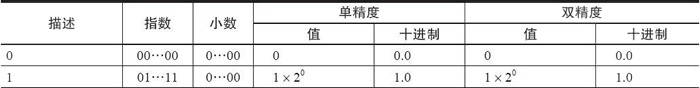
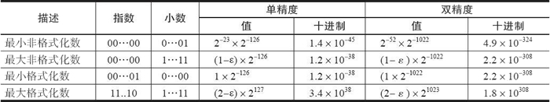
标准浮点格式
IEEE 754标准准确地定义了单精度和双精度浮点格式，并为这两种基本格式分别定义了扩展格式，如下所示：- 单精度浮点格式（32 位）。
- 双精度浮点格式（64 位）。
- 扩展单精度浮点格式（≥43 位，不常用）。
- 扩展双精度浮点格式（≥79 位，一般情况下，Intel x86 结构的计算机采用的是 80 位，而 SPARC 结构的计算机采用的是 128 位）。
1) 单精度浮点格式
单精度浮点格式共 32 位，其中，s、exp 和 frac 段分别为 1 位、k=8 位和 n=23 位，如图 6 所示。图 6
其中，32 位中的第 0 位存放小数段 frac 的最低有效位 LSB（least significant bit），第 22 位存放小数段 frac 的最高有效位 MSB（most significant bit）；第 23 位存放指数段 exp 的最低有效位 LSB，第 30 位存放指数段 exp 的最高有效位 MSB；最高位，即第 31 位存放符号 s。例如，单精度数 8.25 的存储方式如图 7 所示。
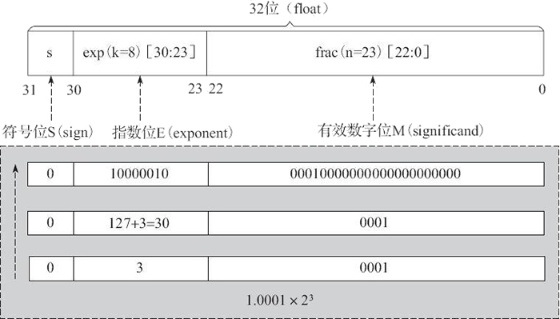
图 7
2) 双精度浮点格式
双精度浮点格式共 64 位，其中，s、exp 和 frac 段分别为 1 位、k=11 位和 n=52 位，如图 8 所示。图 8
其中，frac[31：0] 存放小数段的低 32 位（即第 0 位存放整个小数段的最低有效位 LSB，第 31 位存放小数段低 32 位的最高有效位 MSB）；frac[51：32] 存放小数段的高 20 位（即第 32 位存放高 20 位的最低有效位 LSB，第 51 位存放整个小数段的最高有效位 MSB）；第 52 位存放指数段 exp 的最低有效位 LSB，第 62 位存放指数段 exp 的最高有效位 MSB；最高位，即第 63 位存放符号 s。
在 Intel x86 结构的计算机中，数据存放采用的是小端法（Little Endian），故较低地址的 32 位的字中存放小数段的 frac[31：0] 位。而在 SPARC 结构的计算机中，因其数据存放采用的是大端法（Big Endian），故较高地址的 32 位字中存放小数段的 frac[31：0] 位。
前面主要讨论了 IEEE 754 的单精度与双精度浮点格式，下表对浮点数的相关参数进行了总结，有兴趣的读者可以根据此表对其他浮点格式进行深入解读。
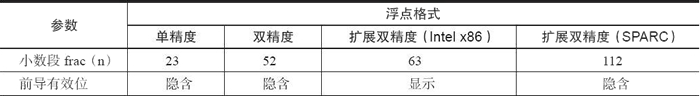
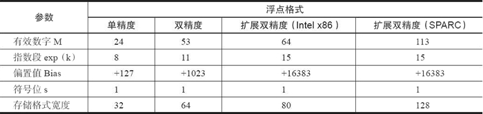
舍入误差
舍入误差是指运算得到的近似值和精确值之间的差异。大家知道，由于计算机的字长有限，因此在进行数值计算的过程中，对计算得到的中间结果数据要使用相关的舍入规则来取近似值，而这导致计算结果产生误差。在浮点数的舍入问题上，IEEE 浮点格式定义了 4 种不同的舍入方式，如下表所示。其中，默认的舍入方法是向偶数舍入，而其他三种可用于计算上界和下界。
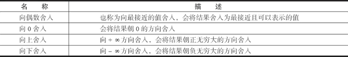
下表是 4 种舍入方式的应用举例。这里需要特别说明的是，向偶数舍入（向最接近的值舍入）方式会试图找到一个最接近的匹配值。因此，它将 1.4 舍入成 1，将 1.6 舍入成 2，而将 1.5 和 2.5 都舍入成 2。
或许看了上面的内容你会问：为什么要采用向偶数舍入这样的舍入策略，而不直接使用我们已经习惯的“四舍五入”呢？
其原因我们可以这样来理解：在进行舍入的时候，最后一位数字从 1 到 9，舍去的有 1、2、3、4；它正好可以和进位的 9、8、7、6 相对应，而 5 却被单独留下。如果我们采用四舍五入每次都将 5 进位的话，在进行一些大量数据的统计时，就会累积比较大的偏差。而如果采用向偶数舍入的策略，在大多数情况下，5 舍去还是进位概率是差不多的，统计时产生的偏差也就相应要小一些。
同样，针对浮点数据，向偶数舍入方式只需要简单地考虑最低有效数字是奇数还是偶数即可。例如，假设我们想将十进制数舍入到最接近的百分位。不管用哪种舍入方式，我们都将把 1.2349999 舍入到 1.23，而将 1.2350001 舍入到 1.24，因为它们不是在 1.23 和 1.24 的正中间。另一方面我们将把两个数 1.2350000 和 1.2450000 都舍入到 1.24，因为 4 是偶数。
由IEEE浮点格式定义的舍入方式可知，不论使用哪种舍入方式，都会产生舍入误差。如果在一系列运算中的一步或几步产生了舍入误差，在某些情况下，这个误差将会随着运算次数的增加而积累得很大，最终会得出没有意义的运算结果。因此，建议不要将浮点数用于精确计算。
当然，理论上增加数字位数可以减少可能会产生的舍入误差。但是，位数是有限的，在表示无限浮点数时仍然会产生误差。在用常规方法表示浮点数的情况下，这种误差是不可避免的，但是可以通过设置警戒位来减小。
除此之外，IEEE 754 还提出 5 种类型的浮点异常，即上溢、下溢、除以零、无效运算和不精确。其中，每类异常都有单独的状态标志。鉴于篇幅有限，本节就不再详细介绍。
关注公众号「站长严长生」，在手机上阅读所有教程，随时随地都能学习。内含一款搜索神器，免费下载全网书籍和视频。

微信扫码关注公众号